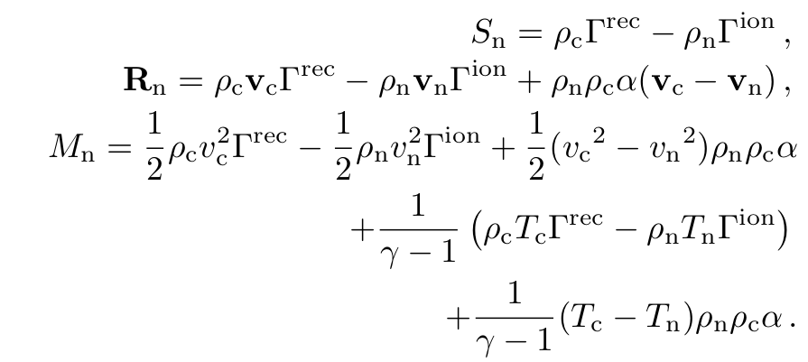

Two fluid equations

The collisonal terms

Parameters set in twofl_list
namelist /twofl_list/ twofl_eq_energy, twofl_gamma, twofl_adiab,&
twofl_eta, twofl_eta_hyper, twofl_etah, twofl_glm_alpha,&
twofl_thermal_conduction_c, use_twofl_tc_c, twofl_radiative_cooling_c, twofl_Hall, twofl_gravity,&
twofl_viscosity, twofl_4th_order, typedivbfix, source_split_divb, divbdiff,&
typedivbdiff, type_ct, divbwave, SI_unit, B0field,&
B0field_forcefree, Bdip, Bquad, Boct, Busr,twofl_equi_thermal_c,&
twofl_dump_full_vars, has_equi_rho_c0, has_equi_pe_c0, twofl_hyperdiffusivity,twofl_dump_hyperdiffusivity_coef,&
has_equi_pe_n0, has_equi_rho_n0, twofl_thermal_conduction_n, twofl_radiative_cooling_n, &
twofl_alpha_coll,twofl_alpha_coll_constant,&
twofl_coll_inc_te, twofl_coll_inc_ionrec,twofl_equi_ionrec,twofl_equi_thermal,&
twofl_equi_thermal_n,dtcollpar,&
twofl_dump_coll_terms,twofl_implicit_calc_mult_method,&
boundary_divbfix, boundary_divbfix_skip, twofl_divb_4thorder, &
clean_initial_divb, &
twofl_trac, twofl_trac_type, twofl_trac_mask,twofl_cbounds_species
Splitting
set
has_equi_pe_n0
has_equi_pe_c0
has_equi_rho_n0
has_equi_rho_c0
to true in twofl_list and implement usr_set_equi_vars in mod_ust.t file
subroutine usr_init()
...
usr_set_equi_vars => special_set_equi_vars
...
end subroutine usr_init
subroutine special_set_equi_vars(ixI^L,ixO^L,x,w0)
use mod_global_parameters
integer, intent(in) :: ixI^L,ixO^L
double precision, intent(in) :: x(ixI^S,1:ndim)
double precision, intent(inout) :: w0(ixI^S,1:number_equi_vars)
double precision, allocatable, dimension(:) :: rho_n0, rho_c0, pe_n0, pe_c0
integer :: ix2
allocate(rho_n0(ixOmin1:ixOmax1), pe_n0(ixOmin1:ixOmax1), rho_c0(ixOmin1:ixOmax1), pe_c0(ixOmin1:ixOmax1))
call set_equi_vars2(x(ixOmin1:ixOmax1,ixOmin2,1), pe_n0(ixOmin1:ixOmax1), pe_c0(ixOmin1:ixOmax1), &
rho_n0(ixOmin1:ixOmax1), rho_c0(ixOmin1:ixOmax1))
do ix2=ixOmin2,ixOmax2
w0(ixOmin1:ixOmax1,ix2,equi_pe_c0_) = pe_c0(ixOmin1:ixOmax1)
w0(ixOmin1:ixOmax1,ix2,equi_rho_c0_) = rho_c0(ixOmin1:ixOmax1)
w0(ixOmin1:ixOmax1,ix2,equi_pe_n0_) = pe_n0(ixOmin1:ixOmax1)
w0(ixOmin1:ixOmax1,ix2,equi_rho_n0_) = rho_n0(ixOmin1:ixOmax1)
enddo
deallocate(rho_n0,pe_n0,rho_c0,pe_c0)
end subroutine special_set_equi_vars
Convert
The two fluid module uses the conversion to dat files. A new type of conversion has been defined "dat_generic_mpi" which has to be set in filelist in the parameter file: convert_type="dat_generic_mpi" and (convert or autoconvert). The code below is from twofl_check_params subroutine in twofl/mod_twofl_phys.t:
if(twofl_dump_full_vars) then
if(mype .eq. 0) print*, " add conversion method: split -> full "
call add_convert_method(convert_vars_splitting, nw, cons_wnames, "new")
endif
#if !defined(ONE_FLUID) || ONE_FLUID==0
if(twofl_dump_coll_terms) then
if(mype .eq. 0) print*, " add conversion method: dump coll terms "
call add_convert_method(dump_coll_terms, 3, (/"alpha ", "gamma_rec", "gamma_ion"/), "_coll")
endif
#endif
function dump_coll_terms(ixI^L,ixO^L, w, x, nwc) result(wnew)
use mod_global_parameters
integer, intent(in) :: ixI^L,ixO^L, nwc
double precision, intent(in) :: w(ixI^S, 1:nw)
double precision, intent(in) :: x(ixI^S,1:ndim)
double precision :: wnew(ixO^S, 1:nwc)
call get_alpha_coll(ixI^L, ixO^L, w, x, wnew(ixI^S,1))
call get_gamma_ion_rec(ixI^L, ixO^L, w, x, wnew(ixI^S,2), wnew(ixI^S,3))
end function dump_coll_terms